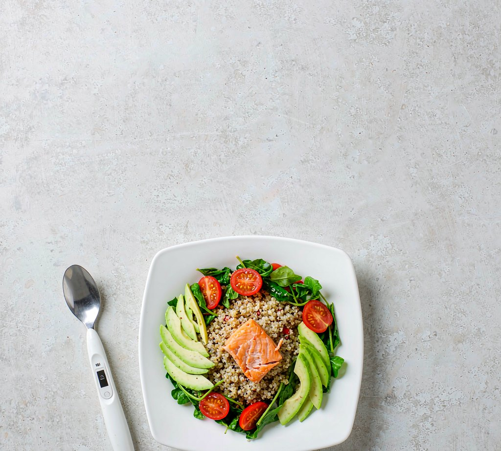

About Equimeal
Equimeal is a made-up word combining two ideas we refuse to separate — equal access to health, and the meals where health begins.
A calorie-tracking utensil that automatically weighs every bite — making weight loss and nutritional management accessible to everyone.
To build a smart weighing platform that covers all scenarios — and promotes healthy eating habits for all humanity.
Core Values
Every decision starts from one question: does this help someone eat better and live healthier?
From the load cell to the calorie math, accuracy is the product. We calibrate, test, and verify.
A spoon that weighs what you eat didn't exist — so we built it, from firmware to app to cloud.
Nutritional management shouldn't be a privilege. Gramo is designed to be affordable and effortless for everyone.
Our Story
Equimeal is TEAM 智味勺 — four students from Hangzhou Entel Foreign Language School, competing in the Conrad Challenge, Health & Nutrition track.
34.3% of Chinese adults are overweight and 16.4% are obese (NHC 2024). People around us wanted to control calories — but manual food logging was too tedious to sustain, and guessing was too inaccurate to work.
Existing tools all fail the same way: apps need manual input, photo diaries can't measure mass, kitchen scales only work before eating. We asked: what if the spoon itself weighed every bite, automatically?
We assembled the spoon's internal components, streamed weight data over Bluetooth, and watched calories appear on screen — the full hardware–software–data chain running end to end, working through sensor drift and packet loss along the way.
The companion app became a working web prototype running in the browser — with dish recognition built "narrow first": a curated database done accurately, rather than a huge one done poorly.
We validated the model box by box on the Lean Canvas — pricing at $49 with 43% gross margin, a $4.99/month Premium tier, and dual-sourced load cells — backing every figure with industry reports and competitor pricing.
Quantitative sensor calibration, then Gramo's bigger ambition: a smart weighing platform that covers all eating scenarios — anywhere people eat, Equimeal can measure.
Why It Matters
Workers and students aged 20–35 who eat out daily want to control calorie intake — but quit food logging. When tracking fails, diets fail. Gramo removes the failure point: the tracking happens by itself, as you eat.

Four students, one mentor, one mission.